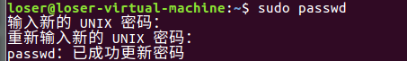
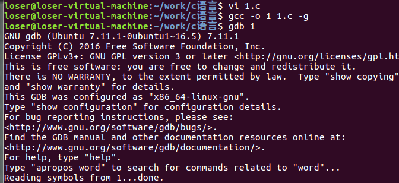

Pwntools
首先是权限问题 先让系统又root权限 但是需要输入密码 在网上找了一下 才知道每次系统开机都会随机更新root密码 然后执行下列命令自己更改密码
1 | sudo passwd |

下来切换用户 输入刚才更改的密码1
su -
{kind=link}
安装pwntools1
2pip install --upgrade pwntools
apt-get install python-dev
gdb
安装gdb
在root权限下进行 一步一步来1
2apt-get update
apt-get install gdb
简单练习
编写了一个简单的c程序练习了一下1
2
3
4
5
6
7
8#include<stdio.h>
int main()
{
int a=1,b=2;
b=a+b;
printf("%d",b);
return 0;
}
整个过程通过gcc来完成1
gcc –o a a.c -g
进入gdb

gdb调试常用命令
1.用start命令开始执行程序
2.单步执行(n)
3.gdb断点调试 b[行数]
例如：b 8是breakpoint 8的简写（breakpoint的参数也可以以是某个函数名，表示在此函数处设置一个断点），表示在程序第八行设置一个断点
4.一次调试可以设置多个断点，用info命令可以查看已经设置的断点
5.delete
每个断点都有一个编号（有的断点行数不一样，但地址却一样，有的地方不能够设置断点或者说与上一个设置的断点等效），可以用编号指定删除某个断点。
6.条件断点 （break 和run）
gdb的断点功能非常灵活，还可以设置断点在满足某个条件时才激活，例如：b 9 if a == 2表示从头开始运行程序，在a==2的条件下中断才有效
7.gdb的观察点（watch 和c）
断点是当程序执行到某一代码行时中断，而观察点是当程序访问某个存储单元时中断，如果我们不知道某个存储单元是在哪里被改动的，这时候观察点尤其有用。
ni: 执行一行汇编代码但不进入函数内部
s： 执行一行源代码而且进入函数内部
si: 执行一行汇编代码而且进入函数内部
c: 继续执行到下一个断点
stack: 显示栈信息
directory+源码所在目录：加载程序源码
x ： 按十六进制格式显示内存数据
其中x/{字节数}x 以16进制显示指定地址处的数据;{字节数}表示字节数制定（b 单字节；h 双字节；w 四字节；g 八字节；默认为四字节